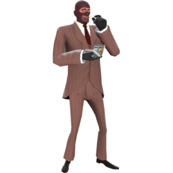
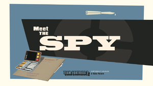

spy
- icono:
- tipo: asistencia
- salud:125/
 185
185 - velocidad:107%
meet the spy
El Spy procede de una región indeterminada de Francia, es un entusiasta de los trajes elegantes y los cuchillos afilados, maestro del sigilo y el engaño para ayudar al equipo. Usando su gama única de relojes de invisibilidad, puede hacerse invisible e incluso fingir su propia muerte, dejando a los enemigos desconcertados y con la guardia baja. Su kit de disfraces le permite tomar la forma de cualquier clase en cualquier equipo, permitiéndole mezclarse e ir a escondidas tras las líneas enemigas para más tarde apuñalar a sus «compañeros», literalmente, por la espalda. De hecho, una rápida puñalada por la espalda con cualquier cuchillo del Spy provocará la muerte instantánea de cualquier enemigo de un solo golpe, excepto mientras el enemigo esté bajo los efectos de algún tipo de invulnerabilidad, como por ejemplo, una Supercarga. Además de ser capaz de asesinar a los enemigos principales de forma rápida y eficiente, el Spy tiene una ventaja sobre el Engineer. Que puede usar su Zapador para sabotear las construcciones del Engineer, desactivándolas y drenando poco a poco su salud hasta destruirlas. Sin embargo, un Engineer o un Pyro que lleve el Demoledor, el Mutilador o el Aniquilador de Neón, pueden destruir los zapadores de las construcciones evitando su destrucción. El Spy es capaz de entrar en teleportadores enemigos y aprovechar esto a su ventaja para adentrarse en el equipo enemigo y camuflarse entre ellos para luego asesinarlos. Mientras que las demás clases (exceptuando al Medic con el Juramento Solemne), solo pueden ver los nombres y la salud de sus compañeros de equipo, el Spy puede ver también los nombres y salud de sus rivales. Otra de sus muchas ventajas es que el Spy, al disfrazarse, puede pedir asistencia de un Medic rival y este puede ayudarlo si darse cuenta de que es un Spy enemigo. Esto puede ser muy peligroso para el equipo contrario y puede costarle la partida. Además si se emplea Tu Eterna Recompensa, el asesino se disfrazará instantáneamente del jugador asesinado, por lo que puede ser un auténtico peligro para el equipo enemigo. El Spy está doblado por Aleix Estadella en la versión española y Dennis Bateman en la versión original.